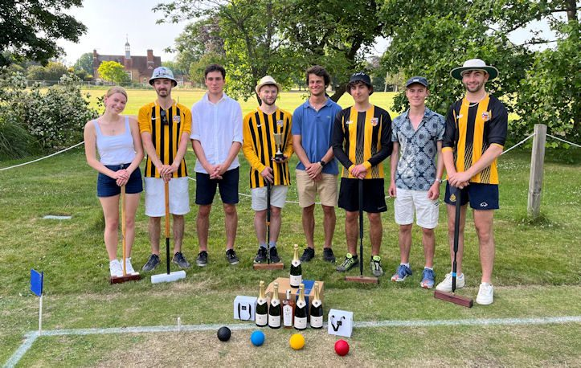

Archive record. Original historical or technical material is retained here for reference.
Before Covid, Oxford's inter-college association croquet competition ('croquet cuppers') was regularly the largest sporting event in the university and (so far as I can tell) the largest single croquet tournament in the world. With a nine-round knockout bracket for 512 four-person teams, the maximum capacity is 2048 players, including seasoned players and absolute beginners alike.
Yet, the last time a competition of this scope could be attempted was 2019! Due to the pandemic, there was no competition in 2020 and a mere 32-team competition in 2021. It was thus absolutely terrific to be able to have cuppers attempting to return to its former glory. While lacking two years' worth of word-of-mouth advertising, we nevertheless managed to gather together the 200 keenest teams for a substantial competition for 800 participants running over 8 weeks and in all the colleges.
As usual, there was a plethora of confused and diverse 'house rules' being imported into some of the early games, which needed early ironing out. To help with this, the OUACC committee ran a demonstration match and eight large beginners' coaching sessions for anyone who turned up, generally around 30 a session. This coaching took players all the way from the basics of single ball strokes to how to play a four ball (or even three ball) break.
Many beginners really took to the game, and the standard of cuppers games improved rapidly. We were also thrilled that, as intended, cuppers, the demo match, and the beginners' sessions all helped to boost membership of the club, where it is possible to get even more involved in association croquet and to improve rapidly.
As mentioned, there was a great deal of variety in the skill and tactical knowledge of the tournament entrants. A particular challenge, especially for the most experienced players, was navigating the unpredictable terrain of the terrible college croquet lawns. Nevertheless, the play improved rapidly as the tournament went on, and so did the lawns, with the final and semi-finals (and optionally the quarter-finals) being played on the full-sized university lawns with more sturdy hoops. At this stage, the most practiced teams started getting the clearest upper hand.
And so, we reached the final. The weather was sweltering, relieved only by a gentle and occasional breeze. Nevertheless, both teams were down in good time to warm up and discover that the lawns were faster than anything they had played before, rewarding precision and confident rushes.
Curiously, the final ended up being between two Brasenose College teams. This can be placed down to a variety of factors: in part was the problem that many colleges had croquet participation hamstrung by Covid-related marquees being deposited on their poor lawns (a fate which Brasenose partly escaped), but the most important factor was the strong croquet culture engendered in the college by last year's OUACC president. It is a useful reminder of how successful cuppers can be at encouraging croquet, by starting at the college level and working up.

Brasenose teams: Gaby Ford, Chris Summers, Ben Rienecker, Josh Taylor, Inigo De La Joya,
Dan Millard, Greg Simond, Tom Mewes. Winners in yellow tops. (Click for larger image).
{kind=link}
The Brasenose-Brasenose nature of the final was initially disappointing to the event organisers, as we worried that there would be fewer spectators. However, this worry was soon proved foolish as large numbers of supportive Brasenose college members and their friends came down to drink Pimm's in the sun (or, at least, in the dappled shade once the heat grew intolerable) and cheer on one or other of the teams.
The teams played doubles matches, the better players on our upper lawn and the second pairs on the lower. Unlike teams from earlier in the tournament, who had shot for the first hoop or played "Aunt Emma" tactics, the finalists immediately showed that they knew what they were doing, with both games settling swiftly into a standard opening with the first ball to the East boundary and the second as a tice on the West.
Both games had a sputtering start, with all players feeling the pressure of the final and the spectators and so missed some easy hoop runs. However, the four players of the Brasenose team that would go on to win clearly had the advantage of being able to build and maintain breaks more reliably, as well as a little more defensive savvy (e.g. pairing up on boundaries, shooting straight through opponents when unwisely paired in the middle of the lawn). This tactical prowess, picked up through coaching and diligent practice, ultimately paid dividends with victory on both lawns.
All in all, the competition was a great success, excellently reminding us of how well suited cuppers can be at getting people into association croquet. To name just one example, four of the finalists went on to join the university team and win some of their games in this year's varsity match against Cambridge.
Special thanks must go to those who made the event possible. The cuppers director, Will Allfrey, masterfully juggled the hundreds of disorganised players without breaking sweat, and our club coach, Ian Plummer, volunteered to run countless coaching sessions to improve the standard of the tournament. We must also thank our sponsors who provided the treasure trove of rewards for the winners (and a bottle or two for the runners up): the Oxford Wine Company, the Oxford Artisan Distillery, and the Croquet Association. The Croquet Association has been, as always, particularly supportive and we are always keen to work together and encourage student croquet (both to find young players, and older players who will rediscover the game later in their lives).
Teddy Wilmot-Sitwell, OUACC President